Chapter 5: IT, Networking & AI Clusters Inside the Data Centre¶
Power, cooling and buildings exist for one reason: to keep the IT equipment running. This chapter opens the racks to show the servers, GPUs, storage, networks and cables inside, how giant AI clusters are wired together, how virtualisation and edge sites fit in, and what happens to hardware at the end of its life. It gives facilities and IT students a shared language for the white space.
5.1 Servers: The Computers That Fill the Racks¶
A server is a computer built to run all day, every day, doing work for many other computers or people at once. Data-centre servers are flat metal boxes that slide into racks, with no screen or keyboard, and they are managed remotely over the network. Inside you find the same basic parts as a PC (processor, memory, storage, network card), just more of them, built for reliability.
Think of it like…
If your laptop is a family car, a server is a delivery van: less pretty, built to carry heavy loads around the clock, and serviced by a fleet manager rather than its driver.
Real-world example
Kestrel Insurance replaces 40 five-year-old 2U servers with 12 new 2U servers that each have two 96-core processors and 1.5 TB of memory. Because each new box does the work of about three old ones, the rack count drops from four to two and power falls from roughly 24 kW to 14 kW. Engineers never visit the racks for setup: they mount the servers, cable them, and finish everything through each server's remote management port.
How it works¶
- Choose a form factor: 1U/2U rack servers for general work, blades or multi-node chassis for density, 4U-10U boxes for GPUs.
- Pick the processor family (x86 from Intel or AMD, or Arm) and the number of sockets, cores and memory channels.
- Add memory (DDR5 RDIMMs), local drives (usually NVMe SSDs) and network cards (25-400 Gb/s).
- Fit redundant hot-swap power supplies and fans so one failure does not stop the server.
- Connect the BMC port to a separate management network so the server can be powered, monitored and reinstalled remotely.
- Install firmware updates, an operating system or hypervisor, then hand the server to the application team.
Who uses it
Data-centre technicians rack and cable servers, while system administrators, cloud engineers and hardware engineers at hyperscalers, colos, banks and universities configure and support them.
Key takeaway
Memorise the anatomy: CPU sockets, DIMM slots, drive bays, PCIe slots, OCP NIC slot, dual PSUs and the BMC port — interviewers love asking you to name the parts of a server.
Going deeper
- Space is rarely the real limit: a 42U rack has room for 40 1U servers, but power and cooling budgets of 10-20 kW usually cap it at 10-20 modern servers.
- Single-socket servers built on high-core-count EPYC chips are increasingly popular: they avoid slower cross-socket (NUMA) memory access and can reduce software licences charged per socket.
- Memory bandwidth depends on populating every channel: EPYC 9005 and Xeon 6900P platforms have 12 DDR5 channels per socket, and empty or mismatched channels can cut bandwidth substantially.
- Drive form factors are moving from 2.5-inch U.2 to EDSFF (E1.S, E3.S), which fit more NVMe drives per U and cool better; a PCIe 5.0 x4 SSD reads at roughly 14 GB/s.
- Power supplies run as 1+1 redundant pairs on A and B feeds; 80 PLUS Titanium units reach about 96% efficiency at half load, and every watt saved also saves cooling.
- Security starts below the operating system: a hardware root of trust checks firmware at boot, and confidential-computing features (AMD SEV-SNP, Intel TDX) encrypt VM memory even from the host administrator.
Common mistakes & misconceptions
- Planning servers by rack units alone; a rack of 1U servers can blow its power budget, so plan kW per rack first, then space.
- Mixing DIMM sizes or leaving memory channels empty to save money; it lowers bandwidth, so install identical modules in every channel.
- Plugging both power supplies into the same PDU; that removes redundancy, so always split them across the A and B feeds.
- Leaving BMCs on the production network with default passwords; isolate them on the out-of-band network and use unique credentials.
Try it: Inspect the processor, memory and hardware sensors of your own Linux machine or lab server¶
lscpu | grep -E 'Model name|Socket|Core|Thread|NUMA'
free -h
sudo dmidecode -t memory | grep -E 'Size|Speed' | head
# On a server with a BMC (your own lab only):
sudo ipmitool sdr type Temperature
sudo ipmitool sel list | tail -5
Key equipment, standards, metrics, vendors & tools¶
| Name | What it does | Example |
|---|---|---|
| Rack server (1U/2U) Dell, HPE, Lenovo, Supermicro, Cisco · Equipment · Current · IT |
A self-contained server shaped to fit a 19-inch rack; 1U is dense, 2U leaves room for more drives, cards and bigger fans. | A web company fills each rack with 20 x 1U servers for stateless web front-ends and uses 2U servers for databases. |
| Blade server Dell PowerEdge MX, HPE Synergy, Lenovo Flex · Equipment · Current · IT |
Thin server modules that slide into a shared chassis supplying power, cooling and networking, saving cables and space. | A bank fits 8 compute blades into one 7U chassis with shared switches instead of cabling 8 separate rack servers. |
| Multi-node server Supermicro, Dell, HPE, Gigabyte · Equipment · Current · IT |
Two to four independent servers sharing one 2U chassis and power supplies, popular for dense cloud and HPC clusters. | A research cluster packs four nodes per 2U box, giving 80 nodes in a single 42U rack. |
| OCP server Open Compute Project; ODMs such as Quanta, Wiwynn, Foxconn · Equipment · Current · IT |
A server built to Open Compute Project open designs, usually for 21-inch OCP Open Rack with power from a rack busbar. | A hyperscaler buys thousands of identical OCP sleds directly from an ODM rather than branded servers. |
| Intel Xeon 6 Intel · Product · Current · IT |
Intel's server CPU family offering P-core models for heavy per-core performance and E-core models with very many efficient cores. | A database team picks P-core Xeon 6 for fast queries; a microservices team chooses an E-core part for density. |
| AMD EPYC (Turin and Venice) AMD · Product · Current · IT |
AMD's server CPUs; 5th-gen Turin offers up to 192 cores, and Zen 6 'Venice' on 2 nm (up to 256 cores) arrives in 2026. | A cloud provider consolidates three older dual-socket hosts into one EPYC host with 192 cores per socket. |
| Arm server CPUs AWS Graviton, Google Axion, Microsoft Cobalt, NVIDIA Grace/Vera, Ampere · Product · Current · IT |
Processors using Arm designs, often custom-built by cloud providers for better performance per watt than many x86 chips. | A start-up moves its containers to Graviton-based cloud instances and cuts its compute bill noticeably. |
| DDR5 RDIMM memory JEDEC · Component · Current · IT |
Registered memory modules used in current servers; each CPU has 8-16 memory channels, and filling them evenly maximises bandwidth. | An engineer installs 24 x 64 GB RDIMMs, one per channel across two sockets, giving 1.5 TB of balanced memory. |
| PCIe and CXL PCI-SIG (PCIe 5.0/6.0); CXL Consortium · Standard · Current · IT |
PCIe connects cards like GPUs, SSDs and NICs to the CPU; CXL runs over the same lanes to share or expand memory. | A server adds a CXL memory expander card to give an in-memory database 512 GB of extra RAM. |
| BMC (Baseboard Management Controller) Dell iDRAC, HPE iLO, Lenovo XCC, OpenBMC · Component · Current · IT |
A small independent computer on the motherboard that lets admins power, monitor, update and reinstall the server remotely. | At 3 a.m. an engineer opens a frozen server's remote console through its BMC and reboots it from home. |
| IPMI Intel, HPE, Dell, NEC (IPMI 2.0) · Standard · Legacy · IT |
An older standard protocol for talking to BMCs: read sensors, power cycle, view the event log; weak security by modern standards. | A technician runs 'ipmitool chassis power status' to confirm a lab server is powered on. |
| Redfish DMTF · Standard · Current · IT |
Modern REST/JSON API for managing servers through the BMC, replacing IPMI with secure HTTPS and scriptable automation. | An automation script queries Redfish on 500 servers to list every firmware version before a patch cycle. |
| Out-of-band (OOB) management network Industry practice · Practice · Current · IT |
A separate network for BMCs and console ports, so you can reach equipment even when the main network or OS is down. | When a bad switch update breaks production, engineers still reach every server's BMC through the OOB network. |
| ODM (Original Design Manufacturer) Quanta (QCT), Wiwynn, Foxconn, Inventec · Company · Current · Business |
Manufacturers that design and build servers to a customer's specification, mainly for hyperscalers buying in huge volumes. | A cloud giant orders 50,000 custom servers from an ODM in Taiwan, with its own motherboard and firmware design. |
5.2 GPU and AI Accelerator Servers¶
An accelerator is a special chip that does one kind of maths much faster than a normal processor. GPUs (graphics processing units) and custom AI chips are now the engines of AI, doing the huge matrix calculations needed to train and run models. AI servers carry four to eight of these chips, plus very fast memory stacked right beside them, and they use far more power than ordinary servers.
Think of it like…
A CPU is a brilliant chef who can cook anything; a GPU is a kitchen with thousands of line cooks who each chop the same vegetable at the same time — unbeatable when the job is millions of identical chops.
Real-world example
Northgate Robotics leases 16 eight-GPU servers to train a vision model. Each server draws about 10-14 kW at full load, so the colo puts only two servers per air-cooled rack and spreads them over eight racks. The training job takes 11 days; on CPUs alone the team estimates it would have taken many months.
How it works¶
- AI maths (mostly matrix multiplication) is split across thousands of small cores inside each GPU or accelerator.
- High Bandwidth Memory (HBM) stacked next to the chip feeds it data at several terabytes per second.
- Eight accelerators in a server are joined by a fast private link (e.g. NVLink) so they act like one big GPU.
- Each accelerator also gets its own high-speed network card to talk to other servers in the cluster.
- Power and cooling are sized for 700 W to over 1,000 W per chip, often needing liquid cooling.
Who uses it
AI infrastructure engineers, HPC administrators, cloud GPU providers ('neoclouds'), and data-centre designers planning high-density halls all work with accelerator servers.
Key takeaway
Know the difference between training (teaching a model, needs huge clusters for weeks) and inference (answering questions, needs many smaller deployments close to users) — it drives very different data-centre designs.
Going deeper
- A typical 8-GPU HGX server pairs two host CPUs, terabytes of system memory, one 400-800G back-end NIC per GPU, front-end NICs or DPUs, and local NVMe drives for caching data.
- Number precision drives quoted speed: halving precision (FP16 to FP8 to FP4) roughly doubles peak FLOPS, so always check which precision, and whether sparsity, a petaflops figure assumes.
- Memory often limits inference more than raw maths: model weights plus the KV cache for every user's conversation must fit in HBM, which is why 141-288 GB GPUs sell so well.
- Air-cooled 8-GPU servers are heavy loads: NVIDIA lists a DGX H100 at about 10.2 kW maximum and a DGX B200 at about 14.3 kW, more than many whole enterprise racks.
- Accelerators split into merchant GPUs anyone can buy (NVIDIA, AMD) and custom chips that hyperscalers design for their own clouds (Google TPU, AWS Trainium, Microsoft Maia, Meta MTIA).
- Fleet operators watch ECC memory errors, NVLink errors and NVIDIA 'XID' error codes; GPUs that keep faulting are drained, tested and replaced automatically.
Common mistakes & misconceptions
- Assuming GPU servers fit normal rack power; one 8-GPU box can need 10-14 kW, so check rack power and cooling before ordering.
- Comparing chips on headline petaflops alone; also compare precision, memory size and bandwidth, interconnect and software maturity.
- Ignoring software support; a cheaper accelerator saves little if models need months of porting, so test your frameworks first.
Try it: Check GPU model, power draw, temperature and memory on a machine with an NVIDIA GPU¶
nvidia-smi
nvidia-smi --query-gpu=name,power.draw,power.limit,temperature.gpu,memory.used,memory.total --format=csv
nvidia-smi topo -m # how GPUs and NICs are connected inside the server
Key equipment, standards, metrics, vendors & tools¶
| Name | What it does | Example |
|---|---|---|
| NVIDIA HGX / DGX NVIDIA · Product · Current · IT |
HGX is NVIDIA's 8-GPU baseboard that server makers build around; DGX is NVIDIA's own complete branded AI server and cluster line. | A cloud provider buys HGX B200 servers from Supermicro, while a university buys DGX systems directly with NVIDIA support. |
| NVIDIA Hopper (H100/H200) NVIDIA · Product · Current · IT |
The 2022-2024 GPU generation that powered the first big generative-AI wave; H200 raised memory to 141 GB HBM3e. | Many inference fleets still run H100 servers bought in 2023, now used for smaller models. |
| NVIDIA Blackwell (B200/B300) NVIDIA · Product · Current · IT |
NVIDIA's 2025 GPU generation; Blackwell Ultra (B300) carries 288 GB HBM3e and targets reasoning and inference at scale. | An AI lab swaps a Hopper cluster for Blackwell and trains its next model in about half the time. |
| NVIDIA Vera Rubin NVIDIA · Product · Emerging · IT |
Blackwell's successor platform pairing Rubin GPUs (with HBM4) and Vera Arm CPUs, with cloud availability from the second half of 2026. | A hyperscaler reserves floor space and liquid-cooling capacity in 2026 for its first Vera Rubin racks. |
| AMD Instinct MI300X / MI325X / MI355X AMD · Product · Current · IT |
AMD's data-centre GPUs, known for large memory (192 GB, 256 GB and 288 GB respectively) and programmed with the ROCm software stack. | A chatbot company serves a large model on fewer MI300X GPUs because the whole model fits in their memory. |
| AMD Instinct MI400 series AMD · Product · Emerging · IT |
AMD's 2026 GPUs (e.g. MI455X with 432 GB HBM4), sold mainly inside the Helios rack-scale system. | A neocloud signs up for Helios racks built around MI455X GPUs for 2026-2027 delivery. |
| Google TPU (Trillium and Ironwood) Google · Product · Current · IT |
Google's custom AI chips; Trillium is the sixth generation and Ironwood, the seventh, became generally available in late 2025. | An AI company rents Ironwood TPU pods on Google Cloud to serve its model to millions of users. |
| AWS Trainium and Inferentia Amazon Web Services · Product · Current · IT |
Amazon's own AI chips; Trainium3 UltraServers (up to 144 chips) became generally available in December 2025. | A start-up trains on Trainium instances to cut cost versus comparable GPU instances on AWS. |
| Intel Gaudi 3 Intel · Product · Current · IT |
Intel's AI accelerator with built-in Ethernet ports for scaling out, positioned as a lower-cost alternative to GPUs. | An enterprise pilots Gaudi 3 servers for fine-tuning models in its own data centre. |
| HBM (High Bandwidth Memory) JEDEC; SK hynix, Samsung, Micron · Component · Current · IT |
Memory chips stacked vertically and placed right beside the GPU, giving terabytes per second of bandwidth; HBM4 arrives with 2026 chips. | Shortages of HBM in 2024-2025 limited how many AI GPUs could be built, whatever the factory capacity. |
| Thermal Design Power (TDP) Chip vendors · Metric · Current · Mechanical |
Heat a chip is designed to dissipate at sustained load; AI GPUs rose from about 400 W to over 1,000 W in a few years. | Planners multiply 8 GPUs x 1,000 W plus CPUs and fans to estimate a server near 12-14 kW. |
| SXM / OAM module NVIDIA (SXM); OCP (OAM) · Standard · Current · IT |
Mezzanine module formats that mount accelerators flat on a baseboard for higher power and direct chip-to-chip links, unlike PCIe cards. | An 8-GPU HGX board uses SXM modules, while a smaller inference server uses PCIe GPU cards. |
| CUDA and ROCm NVIDIA (CUDA); AMD (ROCm) · Software · Current · IT |
The software platforms that let AI frameworks such as PyTorch run on GPUs; CUDA's maturity is a major reason for NVIDIA's lead. | A team ports its PyTorch training code from CUDA to ROCm with only small changes to run on AMD GPUs. |
| NVIDIA DCGM NVIDIA (Data Center GPU Manager, free) · Software · Current · IT |
NVIDIA's tool for monitoring GPU health across a fleet, running diagnostics and exporting metrics such as temperature, power and memory errors. | A nightly DCGM diagnostic flags a GPU with rising memory errors, so it is drained and swapped before a customer's training job crashes. |
| Low-precision formats (FP8, FP4) NVIDIA, AMD; OCP Microscaling (MX) formats · Concept · Current · IT |
Smaller number formats for AI maths; Hopper added FP8 and Blackwell FP4, each step roughly doubling throughput at some accuracy cost. | An inference team quantises its model from 16-bit to FP8 and serves the same traffic on about half as many GPUs. |
5.3 Storage Systems: Where the Data Lives¶
Storage systems keep data safe when the power is off, from databases and virtual machines to backups and AI training sets. Data can sit on drives inside a server, on a shared storage array reached over the network, or in huge object stores that scale to billions of files. Good storage design balances speed, capacity, cost and protection against drive failures.
Block, file and object storage
| Block (SAN/DAS) | File (NAS) | Object (S3) | |
|---|---|---|---|
| Unit of data | Fixed-size blocks | Files in folders | Objects + metadata |
| Protocols | FC, iSCSI, NVMe-oF | NFS, SMB | HTTPS S3 API |
| Typical use | Databases, VM disks | Shared folders, home drives | Backups, media, data lakes |
| Scale | TBs to a few PBs | Up to many PBs | PBs, billions of objects |
| Latency | Lowest (sub-ms) | Low | Higher (milliseconds) |
The access method, not the drive type, decides which workloads a storage system suits.
Think of it like…
Storage tiers are like a kitchen: the chopping board (fast flash) holds what you are working on now, the fridge (disk) holds this week's food, and the freezer in the garage (tape) holds things you rarely need but must keep.
Real-world example
Riverside Hospital stores live patient records on an all-flash SAN array with 200 TB of usable space and sub-millisecond response. Scans and X-rays go to a 2 PB object store, and every night backups are copied to an off-site object store and once a month to LTO tape locked in a vault. When one SSD fails, the array rebuilds from parity in under an hour while doctors notice nothing.
How it works¶
- Classify data by how fast it must be and how long it must be kept (hot, warm, cold, archive).
- Choose access type: block (SAN, for databases and VMs), file (NAS, for shared folders) or object (S3 API, for huge unstructured data).
- Choose media: NVMe SSD for speed, high-capacity QLC SSD or HDD for bulk, tape for long-term archive.
- Protect against failures with RAID or erasure coding, snapshots and replication to another site.
- Follow the 3-2-1 backup rule and test restores regularly, including immutable copies against ransomware.
Who uses it
Storage administrators, backup engineers, cloud architects and data-centre technicians who swap failed drives all work with storage systems.
Key takeaway
Remember the 3-2-1 rule: three copies of data, on two different types of media, with one copy off-site (many now add an immutable or offline copy: 3-2-1-1-0).
Going deeper
- Know the performance trio: IOPS (operations per second), throughput (GB/s) and latency (microseconds to milliseconds); databases need IOPS and low latency, while AI training and video need throughput.
- RAID 1 mirrors, RAID 5 survives one drive failure, RAID 6 survives two and RAID 10 stripes across mirrors; with 20-30 TB hard drives, rebuilds can take days, so RAID 5 is now risky.
- Erasure coding k+m stores k data and m parity fragments on different nodes; 8+3 gives about 73% usable capacity versus 33% for three full copies, at the cost of CPU and rebuild traffic.
- Arrays quote 'effective' capacity after deduplication and compression, often 3:1 or more for VMs, but encrypted or already-compressed data such as video barely shrinks at all.
- Backup design starts from two numbers: RPO (how much data you can afford to lose) and RTO (how long recovery may take); immutable snapshots and S3 Object Lock defend against ransomware.
- AI storage reads huge datasets in parallel and absorbs checkpoint bursts; GPUDirect Storage lets data flow from NVMe or the network straight into GPU memory without passing through the CPU.
Common mistakes & misconceptions
- Treating RAID or replication as a backup; they copy deletions and ransomware too, so keep separate, versioned, immutable backups.
- Never testing restores; schedule regular recovery drills, because an untested backup may fail exactly when you need it.
- Sizing on raw capacity; parity, spares, file-system overhead and growth headroom can take 30% or more.
- Using very large hard drives in RAID 5; long rebuilds risk a second failure, so use RAID 6 or erasure coding.
Try it: Work out usable capacity for RAID 6 versus 8+2 erasure coding in Python¶
drives, size_tb = 12, 30.72
raw = drives * size_tb
raid6 = (drives - 2) * size_tb # two drives' worth of parity
ec_8_2 = raw * 8 / 10 # 8 data + 2 parity fragments
print(f'raw {raw:.0f} TB, RAID6 {raid6:.0f} TB, EC 8+2 {ec_8_2:.0f} TB')
Key equipment, standards, metrics, vendors & tools¶
| Name | What it does | Example |
|---|---|---|
| DAS (Direct-Attached Storage) General storage concept · Concept · Current · IT |
Drives inside or cabled directly to one server; fast and simple, but not shared with other servers. | Each node of a distributed database uses its own internal NVMe SSDs and replicates data in software. |
| SAN (Storage Area Network) INCITS T11 (Fibre Channel); IETF RFC 7143 (iSCSI) · Concept · Current · IT |
A dedicated network giving servers block-level access to shared arrays, so remote disks appear as local drives. | A VMware cluster stores all its virtual machines on a shared SAN array so VMs can move between hosts. |
| Fibre Channel INCITS T11; Fibre Channel Industry Association · Technology · Current · IT |
A lossless, low-latency network built specifically for storage, with its own switches and host bus adapters (HBAs). | A bank runs its core databases over redundant 32G and 64G Fibre Channel fabrics A and B. |
| NVMe over Fabrics (NVMe-oF) NVM Express, Inc. · Standard · Current · IT |
Extends the fast NVMe SSD protocol across a network (RDMA, TCP or Fibre Channel) for near-local flash speed. | An AI platform reaches shared flash over NVMe/TCP on ordinary Ethernet, avoiding a separate storage fabric. |
| NAS (Network-Attached Storage) NFS (IETF), SMB (Microsoft) · Concept · Current · IT |
File storage shared over the network using NFS (mainly Linux) or SMB (mainly Windows), with folders and permissions. | A design studio stores all project files on a NAS mounted by 80 workstations. |
| Object storage (S3 API) Amazon S3 API; Ceph, MinIO, NetApp StorageGRID, Cloudian · Technology · Current · IT |
Stores data as objects with metadata in flat buckets, scaling to billions of items over HTTP; the S3 API is the de facto standard. | A video platform keeps 5 PB of uploads in an on-premises S3-compatible object store. |
| All-flash array Everpure (formerly Pure Storage), NetApp, Dell, HPE, IBM · Equipment · Current · IT |
A storage system using only SSDs, giving very low latency, less power and space per TB of performance than disk arrays. | A retailer moves from 6 racks of spinning-disk arrays to one rack of all-flash, cutting power by two-thirds. |
| HDD vs SSD (TLC/QLC) Seagate, Western Digital, Toshiba; Samsung, Solidigm, Micron, Kioxia, Sandisk · Concept · Current · IT |
Hard drives are cheapest per TB; SSDs are far faster; dense QLC SSDs now exceed 100 TB per drive, challenging HDDs for bulk data. | A data lake keeps cold data on 30 TB-class HDDs and hot AI training data on 61-122 TB QLC SSDs. |
| RAID and erasure coding General storage concept · Concept · Current · IT |
Ways of adding parity so data survives drive failures; erasure coding spreads fragments across many drives or servers. | An object store uses 8+3 erasure coding, so any three of eleven nodes can fail without losing data. |
| Enterprise storage vendors NetApp, Everpure (formerly Pure Storage), Dell (PowerStore/PowerScale), HPE (Alletra), IBM, Hitachi Vantara · Company · Current · Business |
Established makers of block, file and object arrays with management software, snapshots, replication and support contracts. | A council chooses a mid-range array with five-year support and guaranteed data-reduction ratios. |
| AI-focused storage VAST Data, WEKA, DDN, Everpure (Pure Storage) FlashBlade, IBM Storage Scale · Company · Current · IT |
Very high-throughput flash platforms built to keep thousands of GPUs fed with training data and to absorb checkpoints quickly. | A GPU cluster's storage writes a 10 TB model checkpoint in under a minute so training barely pauses. |
| Parallel file system Lustre (open source, DDN EXAScaler); IBM Storage Scale (formerly GPFS); BeeGFS · Software · Current · IT |
Spreads one file system across many storage servers so thousands of clients read and write in parallel. | A national supercomputer's Lustre file system delivers over a terabyte per second to simulations. |
| LTO tape LTO Program (HPE, IBM, Quantum) · Technology · Current · IT |
Cheap, low-power removable tape for archive and air-gapped backup; LTO-10 cartridges hold 30 TB, or 40 TB in a newer version. | A broadcaster archives its film library to an LTO-10 tape library and stores copies offline against ransomware. |
| 3-2-1 backup rule Industry best practice · Practice · Current · Operations |
Keep three copies of data on two kinds of media with one off-site; add an immutable copy against ransomware. | A school keeps live data, a nightly backup appliance copy, and an immutable cloud copy. |
5.4 Data-Centre Network Architecture: Spine-Leaf and Friends¶
The data-centre network connects every server to every other server, to storage and to the outside world. Modern designs use a 'spine-leaf' layout where each rack's switch (the leaf) connects to every core switch (the spine), so any two servers are only a few hops apart. This replaced older three-layer trees that struggled when most traffic started flowing between servers inside the building.
Think of it like…
Spine-leaf is like a city where every neighbourhood road (leaf) has its own slip road onto every motorway (spine): from any house to any other house you take one road, one motorway and one road — always the same short trip.
Real-world example
Bluefin Payments builds a hall with 32 racks, each with two 48-port 25G leaf switches and 8 x 100G uplinks per leaf. Each leaf connects to four spines, so traffic is shared across many equal paths. Downlinks total 1,200 Gb/s and uplinks 800 Gb/s, an oversubscription of 1.5:1 that suits their mostly web and database traffic. When one spine fails, BGP removes it in under a second and the network loses only a quarter of its capacity.
How it works¶
- Put one or two leaf (top-of-rack) switches in each rack to connect its servers.
- Connect every leaf to every spine switch so all racks are equally close.
- Run a routing protocol (usually BGP) on every link and spread traffic across equal-cost paths (ECMP).
- Use EVPN-VXLAN on top when you need Layer 2 networks or tenant separation across racks.
- Add border leaves that connect the fabric to the internet, WAN, firewalls and other sites.
- When you run out of spine ports, add another tier (super-spine) to grow to many halls.
Who uses it
Network engineers, data-centre network architects and cloud networking teams design and run these fabrics; it is core material for Cisco, Arista and Juniper certifications.
Key takeaway
Know the oversubscription formula: total server-facing bandwidth divided by total uplink bandwidth; 1:1 is non-blocking and is expected for AI back-end networks.
Going deeper
- Scale limits come from port counts: the number of leaves is capped by ports per spine and the number of spines by uplinks per leaf; a super-spine tier (five-stage Clos) grows to tens of thousands of servers.
- The underlay is the routed IP fabric (usually eBGP) linking switches; the overlay (VXLAN with EVPN) carries tenant networks on top, using 24-bit VNIs, about 16 million, versus 4,094 usable VLANs.
- Servers usually connect to two leaves using MLAG or EVPN multihoming, so a leaf can fail or be upgraded without disconnecting any server.
- BFD (Bidirectional Forwarding Detection) spots a dead link in well under a second, far faster than default BGP timers, so traffic shifts to the remaining paths almost instantly.
- Switch generations follow the chip: a 51.2 Tb/s ASIC such as Broadcom Tomahawk 5 gives 64 ports of 800G, and 102.4 Tb/s chips that arrived in 2025 double that.
- ECMP hashing can put several large 'elephant' flows on the same link; AI fabrics add flowlet switching, packet spraying or adaptive routing to keep every link evenly loaded.
Common mistakes & misconceptions
- Stretching Layer 2 across the whole hall 'for flexibility'; large broadcast domains spread failures, so keep Layer 2 local and route between racks.
- Using a single leaf per rack; every switch upgrade then becomes an outage for that rack, so dual-home critical servers.
- Checking oversubscription only at the leaf; spine and border links can be the real bottleneck.
Try it: Calculate leaf oversubscription and how many leaves a spine layer supports¶
servers, server_gbps = 48, 25
uplinks, uplink_gbps = 8, 100
down = servers * server_gbps
up = uplinks * uplink_gbps
print(f'oversubscription {down/up:.2f}:1')
spine_ports = 64 # each spine connects once to every leaf
print('max leaves =', spine_ports)
Key equipment, standards, metrics, vendors & tools¶
| Name | What it does | Example |
|---|---|---|
| Three-tier architecture Classic Cisco design (access/aggregation/core) · Concept · Legacy · IT |
Older tree design of access, aggregation and core switches, often relying on Spanning Tree, which blocks redundant links. | A 2008-era enterprise data centre still has core and aggregation switch pairs that limit east-west bandwidth. |
| Spine-leaf (Clos) fabric Based on Charles Clos's 1953 switching network · Concept · Current · IT |
Two-layer design where every leaf connects to every spine, giving predictable latency and many equal paths. | Any server-to-server flow crosses exactly leaf-spine-leaf: three switch hops, wherever the racks are. |
| Top-of-Rack (ToR), End-of-Row (EoR), Middle-of-Row (MoR) Cabling and switch placement models · Concept · Current · IT |
Where the access switch sits: in each rack (short cables, most common), at the end of a row, or in the middle. | A colo customer uses ToR switches in each rack, while an older hall has EoR chassis switches. |
| East-west vs north-south traffic General networking concept · Concept · Current · IT |
East-west flows between servers inside the data centre; north-south enters or leaves it. Modern apps are mostly east-west. | One web request creates dozens of east-west calls between microservices, databases and caches. |
| Oversubscription ratio General networking concept · Metric · Current · IT |
Server-facing bandwidth divided by uplink bandwidth; 3:1 is common for enterprise, 1:1 (non-blocking) for AI and storage. | 48 x 25G down (1.2 Tb/s) over 6 x 100G up (600 Gb/s) gives 2:1. |
| ECMP (Equal-Cost Multi-Path) Routing feature in all major platforms · Technology · Current · IT |
Spreads flows across several equal-length paths at once using a hash of addresses and ports. | A leaf with four spine uplinks shares traffic roughly 25% per spine. |
| BGP in the data centre IETF RFC 7938 · Standard · Current · IT |
Using eBGP as the only routing protocol in large fabrics, with each switch or rack its own private AS number. | A cloud operator runs eBGP on every leaf-spine link, making the fabric simple and fast to recover. |
| EVPN-VXLAN IETF RFC 7348 (VXLAN), RFC 7432 and RFC 8365 (EVPN) · Standard · Current · IT |
VXLAN tunnels Layer 2 traffic over a routed fabric; EVPN uses BGP to share which MAC and IP lives where. | A colo customer stretches one VLAN across 10 racks for legacy apps, carried over EVPN-VXLAN. |
| Arista Networks Arista (EOS) · Company · Current · IT |
Major data-centre switch vendor whose EOS software and 7000-series switches are widely used by cloud and AI builders. | A trading firm chooses low-latency Arista leaf switches for its exchange colocation racks. |
| Cisco Nexus Cisco (NX-OS, ACI) · Product · Current · IT |
Cisco's data-centre switch family, run with NX-OS or the policy-driven ACI fabric; very common in enterprises. | A hospital's data centre runs a Cisco ACI fabric with policies per application tier. |
| Juniper Networks (part of HPE) HPE (acquisition completed July 2025) · Company · Current · IT |
Maker of QFX/PTX switches, routers and Apstra fabric automation; now part of HPE's networking business. | A telco uses Juniper QFX leaf-spine with Apstra intent-based automation in its edge sites. |
| NVIDIA Spectrum Ethernet NVIDIA (formerly Mellanox) · Product · Current · IT |
NVIDIA's Ethernet switches and SuperNICs, tuned as Spectrum-X for AI clusters with adaptive routing and congestion control. | An AI cloud builds its GPU back-end on Spectrum-X switches instead of InfiniBand. |
| SONiC Linux Foundation (originated at Microsoft) · Software · Current · IT |
Open-source network operating system that runs on switches from many vendors, letting operators avoid lock-in. | A hyperscaler runs SONiC on white-box switches from three different manufacturers. |
| Border leaf / super-spine Fabric design roles · Concept · Current · IT |
Border leaves connect the fabric to WAN, internet and firewalls; super-spines join multiple spine-leaf pods into one larger fabric. | A campus links six data halls through a super-spine layer so any hall can reach any other. |
5.5 Optics, Transceivers and Network Cables¶
Switches and servers send data as electrical signals, but over more than a few metres those signals must be turned into light and sent down glass fibre. A transceiver is the small plug-in module that does this conversion at each end of a link. In AI clusters there can be several optical modules for every GPU, so their cost, power and reliability now matter a great deal.
Think of it like…
A transceiver is like a translator at each end of a phone line: one turns speech (electricity) into Morse code flashes (light), the other turns it back — and the faster people talk, the better and hungrier the translators need to be.
Real-world example
Halcyon AI wires a 1,024-GPU cluster with 800G links. Each GPU needs a transceiver at the server and more at leaf and spine switches, roughly 3,000 modules in total. At about 15 W each the optics alone draw around 45 kW, which convinces the team to use copper DAC cables for the short links inside racks and to evaluate linear pluggable optics for the rest.
How it works¶
- Pick the speed (100G, 400G, 800G, 1.6T) and the distance each link must cover.
- Under about 2-3 m inside a rack, use passive copper DAC; up to around 7 m use active copper (AEC).
- For longer runs, plug an optical transceiver (QSFP-DD or OSFP) into each port and run multimode or single-mode fibre between them.
- Use breakout cables to split one fast port into several slower ones, e.g. 400G into 4 x 100G.
- Track optics power, temperature and light levels via the switch's DOM readings to catch failing modules early.
Who uses it
Network engineers, data-centre technicians who install and clean fibre, and supply-chain teams buying thousands of optics work with these components daily.
Key takeaway
Always inspect and clean fibre connectors before plugging in — dirty end-faces are among the most common causes of link errors in new installations.
Going deeper
- Lane maths: 800G is usually eight lanes of 100G PAM4, and 1.6T uses eight lanes of 200G under IEEE 802.3dj; faster lanes are more sensitive to noise, so FEC is mandatory.
- Reach-code numbers count lanes: DR8 uses eight parallel fibre pairs, while FR4 multiplexes four wavelengths onto one pair, which changes the connector (MPO versus duplex LC) you need.
- An 800G pluggable with a DSP typically draws around 13-18 W; linear pluggable optics remove the DSP to cut that substantially, and co-packaged optics aim lower still per bit.
- Optics are among the most frequently replaced parts in AI clusters; operators trend DOM light levels, temperature and corrected FEC errors to swap modules before links start flapping.
- Inspect every fibre end-face with a scope and clean it before mating (IEC 61300-3-35 sets pass criteria), and never look into a fibre: data-centre lasers are invisible infrared.
Common mistakes & misconceptions
- Mixing multimode optics with single-mode fibre or vice versa; the link fails or is marginal, so match optic, fibre type and connector.
- Assuming any module works in any switch; some platforms check vendor coding, so confirm the compatibility matrix before buying.
- Ignoring MPO polarity on parallel links; transmit must reach receive, so follow one polarity method end to end.
Try it: Estimate optics power for a GPU cluster (illustrative numbers)¶
gpus = 1024
optics_per_gpu = 3 # server end + leaf + spine (rough rule of thumb)
watts_each = 15 # typical 800G pluggable; LPO/CPO are lower
kw = gpus * optics_per_gpu * watts_each / 1000
print(f'{gpus*optics_per_gpu} modules, about {kw:.0f} kW of optics')
Key equipment, standards, metrics, vendors & tools¶
| Name | What it does | Example |
|---|---|---|
| Transceiver (optical module) Coherent, InnoLight, Eoptolink, Broadcom, Cisco, NVIDIA and others · Component · Current · IT |
Hot-pluggable module converting electrical signals to light and back; chosen by speed, reach and fibre type. | A technician slides an 800G module into a leaf port and connects an MPO fibre to it. |
| QSFP-DD and OSFP QSFP-DD MSA; OSFP MSA · Standard · Current · IT |
The two main form factors for 400G-1.6T optics; OSFP is slightly larger, leaving more room for power and cooling. | An AI switch uses OSFP 800G ports, while an enterprise spine uses QSFP-DD 400G. |
| Ethernet speed standards (400G/800G/1.6T) IEEE 802.3bs (400G), 802.3df (800G), 802.3dj (200G lanes, 1.6T) · Standard · Current · IT |
IEEE specifications defining Ethernet speeds; 800G is widely deployed and 1.6T ports arrived in 2025-2026 AI networks. | A 2026 AI build uses 1.6T switch ports split into two 800G GPU links. |
| DAC (Direct Attach Copper) Cable vendors; SFF/MSA specs · Component · Current · IT |
Passive copper twinax cable with connectors fixed at each end; cheapest, lowest power, but only a few metres at high speed. | Servers connect to their ToR switch with 1.5 m DAC cables, using almost no power. |
| AEC (Active Electrical Cable) Credo, Marvell and others · Component · Current · IT |
Copper cable with signal-boosting chips in the ends, reaching about 5-7 m at high speed with lower power than optics. | An AI rack links servers to switches two racks away using 5 m AECs. |
| AOC (Active Optical Cable) Cable vendors · Component · Current · IT |
Fibre cable with optical transceivers permanently attached at both ends; simple to install for 3-100 m links. | A lab uses 20 m AOCs between rows because they are easier than separate optics and patch fibre. |
| Optical reach codes (SR, DR, FR, LR) IEEE 802.3 and industry MSAs · Standard · Current · IT |
Suffixes naming a module's reach and fibre: SR is multimode, about 100 m; DR 500 m, FR 2 km and LR 10 km are single-mode. | An engineer orders 800G-DR8 modules for 300 m spine links and 800G-SR8 for 30 m runs over existing multimode trunks. |
| Breakout cable General cabling practice · Component · Current · IT |
Splits one high-speed port into several lower-speed links, e.g. 400G into 4 x 100G or 800G into 2 x 400G. | One 400G switch port feeds four servers at 100G through a breakout cable. |
| LPO (Linear Pluggable Optics) LPO MSA · Technology · Emerging · IT |
Optics that remove the power-hungry DSP chip and rely on the switch chip's signal processing, cutting module power. | An operator trials LPO modules on short AI links to save several watts per port. |
| CPO (Co-Packaged Optics) NVIDIA Quantum-X/Spectrum-X Photonics; Broadcom · Technology · Emerging · IT |
Optical engines mounted beside the switch chip so fibre plugs into the switch directly, removing pluggable modules and saving power. | An AI cluster uses CPO InfiniBand switches with 1.6 Tb/s ports to reduce optics power and failures. |
| Coherent optics (400ZR/800ZR) OIF implementation agreements · Standard · Current · IT |
Pluggable modules that encode data on light's phase and polarisation, carrying 400G-800G up to around 120 km between sites. | Two data centres 60 km apart are linked directly by 400ZR modules plugged into their routers. |
| DOM / DDM (digital optical monitoring) SFF-8472, CMIS · Technology · Current · Operations |
Built-in sensors that report a module's temperature, voltage and transmit/receive light power to the switch. | A monitoring alert fires when one module's receive power drops, revealing a dirty connector. |
| PAM4 and FEC IEEE 802.3 · Technology · Current · IT |
PAM4 signalling sends two bits per symbol to double lane speed; forward error correction (FEC) then repairs the extra bit errors it causes. | A link shows rising corrected FEC errors but no drops yet, warning engineers to clean or replace the optic before it fails. |
5.6 Interconnection: Peering, Transit and Cloud On-Ramps¶
Interconnection means linking your network to other networks: internet providers, partners, clouds and customers. The physical cables (cross-connects through a meet-me room) are covered in the building chapter; this topic is about what you connect to, how traffic is routed between networks and what it costs. Being able to reach hundreds of networks in one building is a major reason companies choose certain data centres.
Think of it like…
A carrier-neutral data centre is like a busy airport hub: hundreds of airlines (networks) are under one roof, so changing to any of them is a short walk (a cross-connect) instead of a long journey across town.
Real-world example
Corvid Games rents two racks in a Frankfurt colo. It orders cross-connects to two transit providers, a port on the building's internet exchange to peer with 300 networks, and a 10G private link into a cloud provider's on-ramp. Players' traffic now takes shorter routes, latency drops by around 15 ms for many users, and the monthly cloud data-transfer bill falls because traffic avoids the public internet.
How it works¶
- Rent space in a carrier-neutral data centre that hosts many networks and cloud on-ramps.
- Order a cross-connect: the operator runs a fibre from your rack to the other party's cage via the meet-me room.
- Peer at an internet exchange (IXP) to swap traffic with many networks over one port.
- Connect privately to clouds with a direct link (e.g. AWS Direct Connect, Azure ExpressRoute).
- Link your own sites with data-centre interconnect (DCI) over leased wavelengths or dark fibre.
Who uses it
Network engineers, interconnection sales and product teams at colos, carriers and IXPs, and cloud architects designing hybrid networks all work here.
Key takeaway
Know the difference: transit means paying a provider to reach the whole internet; peering means swapping traffic directly with another network, often at no charge, to reach just its users.
Going deeper
- Transit sessions deliver the full internet routing table, around one million IPv4 routes by 2025, whereas peering sessions carry only each side's own and customer routes.
- Transit is often billed per Mb/s at the 95th percentile, so short bursts are effectively free while sustained peaks set the bill; commit levels and port sizes are negotiated separately.
- At an IXP, route servers let a member reach most other members through one or two BGP sessions; the biggest partners still get direct bilateral sessions or a private interconnect.
- Routing security is now expected: publish Route Origin Authorisations in RPKI, drop invalid routes, filter what customers and peers may announce, and follow the MANRS actions.
- Synchronous storage replication waits for the far site to confirm every write, so metro pairs are usually kept within roughly 100 km; asynchronous replication tolerates continental distances.
- The densest interconnection hubs include Frankfurt, Amsterdam, London and Ashburn; DE-CIX Frankfurt alone has passed 10 Tb/s of peak traffic.
Common mistakes & misconceptions
- Buying two 'diverse' circuits that share a duct or building entry; demand route maps and written diversity commitments.
- Accepting every route a peer sends; without prefix filters and RPKI validation, one leak can hijack or black-hole your traffic.
- Assuming peering is always free; ports, cross-connects and exchange fees cost money, so compare the cost per Mb/s with transit.
Try it: See which networks your traffic crosses on the way to a website¶
traceroute example.com # Linux/macOS
tracert example.com # Windows
# Look up which IXPs and facilities a network uses on PeeringDB:
curl -s 'https://www.peeringdb.com/api/net?asn=15169' | head -c 400
Key equipment, standards, metrics, vendors & tools¶
| Name | What it does | Example |
|---|---|---|
| Settlement-free peering vs paid transit Internet business models · Concept · Current · Business |
Peers swap traffic for each other's customers, usually without payment; transit is a paid service that reaches every destination on the internet. | A streaming firm peers with major ISPs to deliver video cheaply and buys transit from two providers for everything else. |
| Private network interconnect (PNI) Large networks and content providers · Concept · Current · IT |
A dedicated cross-connect between two networks for large peering volumes, instead of using the shared IXP fabric. | When peering traffic tops 50 Gb/s, two networks add a 4 x 100G PNI in the same building. |
| Cloud on-ramps AWS Direct Connect, Azure ExpressRoute, Google Cloud Interconnect, Oracle FastConnect · Service · Current · IT |
Private, dedicated connections from your network into a public cloud, giving predictable performance and lower egress costs. | A bank links its colo cage to its cloud region with two diverse 10G Direct Connect circuits. |
| PeeringDB PeeringDB (non-profit) · Resource · Current · IT |
Free public database of networks, IXPs and facilities, used to find where to peer and interconnect. | An engineer checks PeeringDB to see which data centres a content network is present in. |
| Data Centre Interconnect (DCI) Optical vendors: Ciena, Nokia, Cisco/Acacia, others · Concept · Current · IT |
Links between an organisation's own data centres for replication, failover and spreading workloads, from metro fibre pairs to long-haul circuits. | A cloud region links three availability-zone campuses with terabits of DCI capacity so data is copied synchronously between them. |
| Subsea cable landing station Cable consortia and operators · Facility · Current · Facilities |
Coastal building where undersea fibre cables come ashore and connect to terrestrial networks, often near data-centre hubs. | Marseille's role as a landing point for many subsea cables made it a fast-growing interconnection hub. |
| Diverse paths Network design practice · Practice · Current · Operations |
Routing redundant circuits through different cable routes, building entries and meet-me rooms so one cut cannot stop both. | A hospital's two cloud links enter the building on opposite sides and use separate carriers. |
| Autonomous system (ASN) and eBGP IETF RFC 4271 (BGP-4); ASNs issued by RIRs such as RIPE NCC and ARIN · Standard · Current · IT |
Each independent network has an Autonomous System Number and uses external BGP to announce its IP address blocks to neighbouring networks. | Corvid Games gets its own ASN and address block, so it can connect to two transit providers and the exchange and keep its addresses if it switches. |
| IXP route server IXP operators; software such as BIRD and OpenBGPD (RFC 7947) · Technology · Current · IT |
A BGP server at an internet exchange that relays routes between members, so one session reaches most peers at once. | A new regional ISP sets up two route-server sessions at the exchange and immediately swaps routes with hundreds of members. |
| RPKI and MANRS (routing security) IETF RPKI (RFC 6480, RFC 6811); MANRS initiative · Standard · Current · IT |
RPKI cryptographically records which network may announce which addresses so routers can drop invalid routes; MANRS promotes these routing-security basics. | A hosting firm signs route authorisations for its prefixes, so a mistaken announcement by another network is rejected by validating peers. |
| DWDM and wavelength services ITU-T G.694.1 grid; Ciena, Nokia, Cisco and others · Technology · Current · IT |
Dense wavelength division multiplexing sends dozens of light colours, each a 100G-800G+ channel, down one fibre pair; carriers sell single wavelengths. | A bank leases two 100G wavelengths between its primary and backup data centres, each from a different carrier on a different route. |
| 95th-percentile billing Common transit pricing method · Concept · Current · Business |
Usage is sampled every five minutes, the top 5% of samples are ignored, and the customer pays for the highest remaining rate. | A site that bursts to 9 Gb/s for an hour each evening pays for about 4 Gb/s, its 95th-percentile rate. |
| Cloud egress charges Public cloud pricing (AWS, Azure, Google Cloud, Oracle) · Concept · Current · Business |
Fees clouds charge for data leaving them; rates over private interconnects are usually lower than sending the same data over the internet. | A media firm moves 500 TB a month out of the cloud over a private on-ramp instead of the internet, cutting its transfer bill. |
5.7 AI Cluster Design: Scale-Up, Scale-Out and Scale-Across¶
Training a large AI model needs thousands of GPUs to behave like one giant computer, constantly swapping results with each other. Engineers connect GPUs in layers: a super-fast link between GPUs in the same server or rack (scale-up), a big lossless network between racks (scale-out), and now links between whole buildings or sites (scale-across). If any layer is too slow, expensive GPUs sit idle waiting for data.

Think of it like…
An AI cluster is like a giant orchestra: musicians in each section sit close and listen to each other instantly (scale-up), sections follow the conductor across the hall (scale-out), and if two orchestras in different cities play together they need a perfect live link (scale-across).
Real-world example
Meridian Labs builds a 4,096-GPU training cluster as 57 racks of 72 GPUs, linked internally by NVLink. Each GPU also has an 800G network card plugged into an 800G back-end Ethernet fabric with no oversubscription, laid out as 'rails' so GPU 0 of every server shares the same leaf switches. A separate front-end network carries user logins and data loading, and a storage network absorbs a full checkpoint every 30 minutes. When a GPU fails, the job restarts from the last checkpoint, losing at most half an hour.
How it works¶
- Scale-up: join GPUs inside a server or rack with a very fast memory-semantic link such as NVLink, so they share memory like one big GPU.
- Scale-out: give each GPU its own 400-800G NIC on a lossless back-end network (InfiniBand or AI-tuned Ethernet using RDMA).
- Arrange the back-end as rails: the same-numbered GPU in each server connects to the same leaf, keeping most traffic one hop away.
- Keep separate front-end (users, management) and storage networks so they never slow the GPU traffic.
- Checkpoint regularly and monitor every GPU and link, because at this scale something fails almost daily.
- Scale-across: link clusters in several buildings or sites when one site cannot get enough power.
Who uses it
AI infrastructure engineers, HPC network architects, site-reliability engineers at AI labs and neoclouds, and data-centre designers sizing power and cooling for GPU halls.
Key takeaway
Remember MFU (Model FLOPs Utilisation): the share of the GPUs' theoretical maths capacity a training job really uses — around 35-50% is typical for large jobs, and the network is often the bottleneck.
Going deeper
- All-reduce is the key collective: every GPU contributes gradients and receives the summed result; NCCL picks ring or tree algorithms, but the slowest link or GPU sets the pace for everyone.
- Parallelism follows the topology: tensor parallelism needs the scale-up domain, pipeline and data parallelism tolerate the scale-out fabric, and mixture-of-experts models add heavy all-to-all traffic.
- The bandwidth gap is large: fifth-generation NVLink gives each GPU 900 GB/s per direction, while an 800G NIC gives about 100 GB/s, roughly nine times less.
- Lossless RoCEv2 relies on priority flow control (PFC) and ECN-based congestion control; mistuned PFC causes pause storms that stall whole jobs, one reason Ultra Ethernet and adaptive routing emerged.
- Failures are routine at scale: Meta reported 419 unexpected interruptions in a 54-day Llama 3 run on about 16,000 H100 GPUs, roughly 78% traced to hardware, mostly GPUs and their HBM.
- Synchronised training makes thousands of GPUs ramp up and down together, creating megawatt-scale power swings that UPS systems, generators and the grid must tolerate.
- When one site cannot get enough power, labs spread training across campuses; Google reported training Gemini Ultra across multiple data centres linked by high-capacity networks.
Common mistakes & misconceptions
- Judging a cluster by GPU count alone; without a non-blocking back-end and fast storage, utilisation drops and GPUs sit idle.
- Sharing one fabric for user, storage and GPU traffic; data-loading bursts then disturb training collectives, so separate the networks.
- Skimping on checkpoint storage; at thousand-GPU scale something fails daily, so slow checkpoints waste huge amounts of compute.
Try it: Estimate facility power for a GPU cluster in Python (illustrative numbers)¶
gpus = 4096
kw_per_gpu_all_in = 1.8 # GPU + share of CPU, NIC, switch, storage (rack-scale class)
pue = 1.25
it_mw = gpus * kw_per_gpu_all_in / 1000
print(f'IT load about {it_mw:.1f} MW, facility about {it_mw*pue:.1f} MW')
print(f'yearly energy at 80% load about {it_mw*pue*0.8*8760:,.0f} MWh')
Key equipment, standards, metrics, vendors & tools¶
| Name | What it does | Example |
|---|---|---|
| Scale-up vs scale-out vs scale-across Industry terminology (popularised by NVIDIA) · Concept · Current · IT |
Scale-up links GPUs within a server or rack; scale-out links racks across a hall; scale-across links clusters in separate sites. | A lab uses NVLink in each rack, InfiniBand between racks, and long-haul links between two campuses. |
| NVLink and NVSwitch NVIDIA · Technology · Current · IT |
NVIDIA's GPU-to-GPU link and switch chips; fifth-generation NVLink gives each Blackwell GPU 1.8 TB/s of bandwidth. | In an NVL72 rack, all 72 GPUs talk to each other through NVSwitch trays at full NVLink speed. |
| NVLink Fusion NVIDIA (announced 2025) · Technology · Emerging · IT |
A program letting other companies' CPUs and custom accelerators connect into NVIDIA's NVLink scale-up fabric. | A cloud provider plans racks mixing its own custom CPU with NVIDIA GPUs over NVLink Fusion. |
| UALink (Ultra Accelerator Link) UALink Consortium (200G 1.0 spec, 2025) · Standard · Emerging · IT |
An open, multi-vendor scale-up interconnect standard for linking hundreds of accelerators, as an alternative to NVLink. | A chipmaker designs its next accelerator with UALink ports so customers can mix vendors' switches. |
| InfiniBand InfiniBand Trade Association; NVIDIA Quantum (Quantum-X800) · Technology · Current · IT |
A lossless, very low-latency network long used in supercomputers; the default scale-out fabric for many AI clusters. | A national lab runs its AI supercomputer on 800 Gb/s Quantum-X800 InfiniBand. |
| RDMA and RoCEv2 IBTA (RoCE v2 specification) · Technology · Current · IT |
RDMA lets one server write straight into another's memory without the CPU; RoCEv2 carries RDMA over ordinary routed Ethernet. | GPU servers exchange gradients by RDMA over RoCEv2, avoiding operating-system copies. |
| Ultra Ethernet Ultra Ethernet Consortium (Linux Foundation); Spec 1.0 June 2025 · Standard · Emerging · IT |
An open Ethernet-based transport designed for AI and HPC, with better load balancing and congestion handling than RoCE. | A switch and NIC vendor certify their 2026 products against the Ultra Ethernet specification. |
| Spectrum-X and SuperNICs NVIDIA (Spectrum-X, ConnectX-8, BlueField) · Product · Current · IT |
NVIDIA's AI Ethernet platform pairing Spectrum switches with SuperNICs for adaptive routing and congestion control. | An AI factory standardises on Spectrum-X so it can use Ethernet skills instead of InfiniBand. |
| Rail-optimised topology AI cluster design practice · Concept · Current · IT |
Connecting the same-numbered GPU in every server to the same leaf switch ('rail'), so collective traffic mostly stays one hop away. | In a 32-server pod, GPU 3 of each server plugs into rail-3 leaf switches. |
| Front-end vs back-end network AI cluster design practice · Concept · Current · IT |
The front-end carries users, management and data loading; the back-end is a separate lossless fabric only for GPU-to-GPU traffic. | A cluster has 2 x 200G front-end ports per server and 8 x 800G back-end ports. |
| DGX SuperPOD NVIDIA · Product · Current · IT |
NVIDIA's reference design for a complete AI supercomputer: compute, networking, storage and software in tested building blocks. | A university orders a SuperPOD design so it gets a validated layout rather than inventing its own. |
| NCCL and collective operations NVIDIA (NCCL); AMD (RCCL) · Software · Current · IT |
Libraries that run all-reduce and other group communications between GPUs; their performance depends on the network design. | Engineers run NCCL tests on a new cluster to prove every link delivers full bandwidth. |
| Checkpointing AI training practice · Practice · Current · Operations |
Regularly saving the full model state to storage so a long training job can restart after failures without starting over. | A 10,000-GPU job checkpoints every 20 minutes and resumes within minutes after a node fails. |
| MFU (Model FLOPs Utilisation) Introduced in Google's PaLM paper (2022) · Metric · Current · IT |
Share of the hardware's peak maths throughput a training job actually achieves; a key measure of cluster efficiency. | Raising MFU from 35% to 45% gives the same result as adding roughly 28% more GPUs. |
5.8 Rack-Scale AI Systems: When the Rack Becomes the Computer¶
For the largest AI systems, the unit you buy is no longer a server but a whole rack, built and tested at the factory and shipped ready to plug in. A single AI rack can hold 72 GPUs wired together internally, weigh over a tonne and draw more than 100 kW — about as much as dozens of ordinary racks. These racks need liquid cooling, heavy-duty floors and new power designs.
Enterprise rack vs AI rack-scale system
| Typical enterprise rack | GB200 NVL72 rack | |
|---|---|---|
| Power draw | 5-15 kW | about 120-140 kW |
| Weight loaded | often under 1 tonne | about 1.4 tonnes |
| Cooling | Air | Direct-to-chip liquid plus some air |
| GPUs | 0-8 in separate servers | 72 in one NVLink domain |
| Power feed | AC rack PDUs | Power shelves on a DC busbar |
| Arrives as | Empty rack, built on site | Factory-integrated L11 rack |
Almost every number changes by an order of magnitude, so the facility must be designed around the rack.
Think of it like…
Buying a rack-scale system is like buying a fully fitted kitchen delivered in one piece, rather than buying an oven, fridge and cupboards separately and assembling them yourself.
Real-world example
Solace Cloud orders 40 liquid-cooled 72-GPU racks for a new hall. Each arrives on a special pallet at about 1.4 tonnes, so the team checks floor loading, door heights and the route from the loading dock months in advance. At roughly 130 kW per rack, the 40 racks need about 5.2 MW of IT power and coolant distribution units for direct-to-chip cooling. Because racks were tested at the factory (L11 integration), the first ones run jobs within days of arrival.
How it works¶
- Choose the system (e.g. NVIDIA GB200/GB300 NVL72, AMD Helios) and confirm power, cooling and floor loading per rack.
- The manufacturer builds servers (L10), integrates and tests full racks with cabling and liquid manifolds (L11), and sometimes whole clusters (L12).
- Racks are shipped upright on reinforced pallets and moved by trained crews along a pre-checked path.
- On site, connect power whips or busbar, coolant lines to the CDU, and the scale-out network fibres.
- Run burn-in and acceptance tests (thermal, NVLink, network, storage) before handing over to users.
Who uses it
AI data-centre project managers, deployment engineers, liquid-cooling technicians and system integrators handle rack-scale systems from factory to floor.
Key takeaway
When planning AI space, think in kW per rack and kg per rack, not just racks — a 130 kW, 1.4-tonne rack changes power, cooling, floor and logistics design.
Going deeper
- Inside a GB200 NVL72 there are 18 compute trays and 9 NVLink switch trays, linked at the back by a copper 'NVLink spine' of more than 5,000 cables, avoiding power-hungry optics.
- All 72 GPUs share one NVLink domain of about 130 TB/s, so a large model can be split across the whole rack as if it were one giant GPU; that is why the rack is the unit you buy.
- Power arrives through rack power shelves on a DC busbar; announced next-generation designs such as NVIDIA's Kyber rack move toward 800 V DC and several hundred kW per rack.
- L11 integration has become a supply-chain step: ODMs such as Foxconn, Quanta and Wiwynn build and test complete racks, because one bad cable or coupling can disable a 72-GPU domain.
- Before delivery, the site needs coolant supply and flow for every rack, two power feeds sized for peak draw, a floor and route rated for the weight, and fibre trunks already installed.
Common mistakes & misconceptions
- Ordering racks before checking door sizes, lifts and route floor ratings; a 1.4-tonne integrated rack may not reach the hall.
- Treating the rack as 72 independent GPUs; jobs, failures and maintenance all affect the shared NVLink domain.
- Assuming 'liquid-cooled' means no air cooling; a share of the heat, often 10-20%, still goes to room air.
Try it: Rack-scale power and floor-loading check (illustrative numbers)¶
racks, kw_per_rack, kg_per_rack = 40, 130, 1400
footprint_m2 = 0.6 * 1.2 # rack width x depth
print('IT power MW:', racks * kw_per_rack / 1000)
print('point load kg/m2:', round(kg_per_rack / footprint_m2))
# compare with the floor's rated load from the structural engineer
Key equipment, standards, metrics, vendors & tools¶
| Name | What it does | Example |
|---|---|---|
| NVIDIA GB200 NVL72 NVIDIA; built by Dell, HPE, Supermicro, Foxconn, Quanta, Wiwynn and others · Product · Current · IT |
Liquid-cooled rack with 72 Blackwell GPUs and 36 Grace CPUs joined by NVLink into one 72-GPU domain. | A cloud region deploys hundreds of NVL72 racks; its scheduler treats each rack as one 72-GPU NVLink domain for trillion-parameter models. |
| NVIDIA GB300 NVL72 NVIDIA and partners · Product · Current · IT |
Blackwell Ultra version of the NVL72 rack, with about 20 TB of HBM per rack, aimed at reasoning and inference. | An AI lab moves inference to GB300 racks because the larger HBM pool holds longer reasoning contexts for more users at once. |
| Vera Rubin rack-scale systems NVIDIA · Product · Emerging · IT |
Next NVIDIA rack generation combining Rubin GPUs and Vera CPUs, announced for production and cloud availability from late 2026. | A hyperscaler designs a 2027 hall around Vera Rubin racks with higher power per rack than Blackwell. |
| AMD Helios AMD · Product · Emerging · IT |
AMD's first rack-scale AI system: 72 MI400-series GPUs, EPYC Venice CPUs and Pensando networking, in an OCP-style double-wide rack. | A neocloud plans Helios racks as a second source alongside NVIDIA systems. |
| Rack power density (kW per rack) Industry metric · Metric · Current · Electrical |
Power drawn by one rack; 72-GPU AI racks draw roughly 120-140 kW, versus about 5-15 kW for typical enterprise racks. | One NVL72 rack draws as much power as around ten to twenty ordinary office-IT racks. |
| Rack weight and floor loading Structural engineering · Concept · Current · Facilities |
Fully loaded AI racks weigh well over a tonne, so floors, raised-floor tiles, lifts and ramps must be rated for them. | A colo pours reinforced slab floors instead of raised floors for its AI halls. |
| NVIDIA MGX NVIDIA · Standard · Current · IT |
Modular reference architecture letting server makers build many CPU/GPU/DPU configurations from shared building blocks. | A server maker designs a new inference server on MGX and reuses its chassis for three product variants. |
| L10 / L11 / L12 integration Server manufacturing terminology · Concept · Current · Operations |
L10 is a complete tested server; L11 is a fully cabled, tested rack; L12 is multi-rack cluster integration and testing. | A buyer pays for L11 so racks arrive fully cabled with liquid manifolds pressure-tested. |
| Rack integrator Supermicro, Foxconn, Quanta, Wiwynn, Wistron, Celestica and others · Company · Current · Business |
Companies that assemble, cable, test and ship complete racks, often near the customer's data centres. | An integrator runs a factory near a large AI campus so racks travel only a short distance. |
| Liquid-cooled manifold and CDU connection OCP and vendor designs · Component · Current · Mechanical |
Rack pipework with quick-disconnect couplings feeding cold plates, connected to a coolant distribution unit (see Cooling chapter). | Technicians connect supply and return hoses to the rack manifold, then check for leaks before power-on. |
| Cluster acceptance testing Vendor and operator practice (NCCL tests, HPL, NVLink diagnostics) · Procedure · Current · Operations |
Proving integrated racks and the whole cluster at full load with communication, compute and thermal tests, compared against reference results. | Tests show one rack's all-reduce bandwidth 15% below the others; a damaged NVLink cable cartridge is found and replaced before handover. |
| Rack logistics Deployment practice · Practice · Current · Facilities |
Planning how heavy, tall racks travel from truck to hall: dock height, door sizes, lifts, ramps and floor protection. | A team discovers a 2.2 m door is too low for the crated rack and fixes it before delivery day. |
| Compute trays and NVLink switch trays NVIDIA GB200/GB300 NVL72 design · Component · Current · IT |
An NVL72 rack holds 18 compute trays (4 GPUs and 2 CPUs each) and 9 NVLink switch trays, joined by a copper cable spine. | A technician swaps a faulty compute tray, reconnects its liquid quick-disconnects and reruns NVLink diagnostics before returning the rack to service. |
5.9 Virtualisation, Containers and Private Cloud¶
Virtualisation lets one physical server pretend to be many separate computers, called virtual machines (VMs), each with its own operating system. Containers go further, packaging just an application and what it needs so hundreds can share one operating system. Private cloud wraps these with self-service portals and automation, so teams get servers in minutes instead of weeks — on hardware the company controls.

Think of it like…
A physical server is a house; virtual machines are flats inside it, each with its own front door and kitchen, and containers are rooms in a shared flat that use the same kitchen but have their own locks.
Real-world example
Larkspur Council runs 300 workloads on 18 physical hosts using a hypervisor, averaging 17 VMs per host. When licensing costs for its hypervisor rose sharply at renewal, the IT team tested an alternative on four spare hosts, migrated 40 low-risk VMs first, and compared support, backup integration and staff skills before deciding. Meanwhile the developers moved new web apps into containers on a Kubernetes cluster that scales from 6 to 20 pods automatically at peak times.
How it works¶
- Install a hypervisor on each physical host to divide its CPU, memory and storage into VMs.
- Group hosts into clusters with shared storage so VMs can move live between hosts and restart elsewhere after a failure.
- Run containers for modern apps, orchestrated by Kubernetes, which schedules, scales and heals them.
- Add a private-cloud layer: self-service catalogue, quotas, automation and billing reports.
- Connect to public cloud where useful (hybrid cloud) and keep sensitive or steady workloads on-premises.
Who uses it
Virtualisation administrators, cloud and platform engineers, DevOps and SRE teams, and IT managers deciding between on-premises, colo and public cloud.
Key takeaway
Know the two hypervisor types: Type 1 runs directly on hardware (ESXi, Hyper-V, KVM) and is used in data centres; Type 2 runs on a desktop OS (VirtualBox, VMware Workstation) for labs.
Going deeper
- Typical enterprise hosts run 10-30 VMs each; overcommitting CPU (three or more virtual CPUs per physical core) is normal for light workloads, but memory overcommit quickly causes slow swapping.
- Live migration, HA restart and automatic load balancing (VMware DRS) all need every host to see the VM's disks, which is why clusters use a SAN, NAS or distributed storage such as vSAN.
- After Broadcom bought VMware in November 2023 it ended perpetual licences and moved to per-core subscription bundles, leading many organisations to evaluate Nutanix, Hyper-V, Proxmox and OpenShift.
- Containers share the host kernel, so isolation is weaker than with VMs; multi-tenant platforms run containers inside VMs or use sandboxed runtimes such as gVisor or Kata Containers.
- Kubernetes has a control plane (API server, etcd database, scheduler) and worker nodes; pods are the smallest unit, while Deployments, Services and Ingress describe how apps run and are reached.
- Plan clusters N+1: keep enough spare host capacity that all VMs can restart if the largest host fails, and more during maintenance when one host is already out.
Common mistakes & misconceptions
- Thinking virtualisation removes hardware risk; without HA, spare host capacity and shared storage, a host failure still stops its VMs.
- Overcommitting memory heavily; swapping destroys performance, so overcommit CPU rather than RAM.
- Treating containers as strong security boundaries; they share the kernel, so patch hosts and isolate sensitive tenants in separate VMs.
Try it: A minimal Kubernetes Deployment that keeps three copies of a web app running¶
apiVersion: apps/v1
kind: Deployment
metadata:
name: hello-web
spec:
replicas: 3
selector:
matchLabels: {app: hello-web}
template:
metadata:
labels: {app: hello-web}
spec:
containers:
- name: web
image: nginx:stable
resources:
requests: {cpu: 100m, memory: 64Mi}
Key equipment, standards, metrics, vendors & tools¶
| Name | What it does | Example |
|---|---|---|
| Hypervisor (Type 1) General virtualisation concept · Concept · Current · IT |
Software running directly on server hardware that creates and isolates virtual machines and shares out CPU, memory and I/O. | One 64-core host runs 25 VMs for different departments, each unaware of the others. |
| VMware vSphere / ESXi Broadcom (acquired VMware in November 2023) · Product · Current · IT |
Long-time market-leading enterprise hypervisor; Broadcom moved it to subscription bundles, prompting many customers to review alternatives. | A manufacturer renews VMware Cloud Foundation for core systems but pilots another hypervisor for branch sites. |
| VMware Cloud Foundation (VCF) Broadcom · Product · Current · IT |
Broadcom's full private-cloud stack combining vSphere, vSAN storage, NSX networking and management tools. | A bank deploys VCF to give teams a self-service private cloud with built-in software-defined networking. |
| Microsoft Hyper-V Microsoft (Windows Server) · Product · Current · IT |
Microsoft's Type 1 hypervisor built into Windows Server, common in Windows-heavy organisations. | A school trust runs its file and print servers as Hyper-V VMs on a two-node cluster. |
| KVM Linux kernel (open source) · Software · Current · IT |
The hypervisor built into the Linux kernel; underpins many public clouds, OpenStack and Proxmox. | A hosting firm runs thousands of customer VMs on KVM across its Linux hosts. |
| Proxmox VE Proxmox Server Solutions (open source) · Software · Current · IT |
Open-source virtualisation platform combining KVM VMs and LXC containers with a web interface; popular with smaller firms and homelabs. | A student builds a three-node Proxmox cluster from used servers to practise live migration. |
| Nutanix AHV Nutanix · Product · Current · IT |
Nutanix's KVM-based hypervisor included with its platform, often considered by VMware customers looking to switch. | A retailer moves 500 VMs to Nutanix AHV using the vendor's migration tool over three months. |
| Containers Open Container Initiative (OCI); Docker, containerd · Technology · Current · IT |
Lightweight packages holding an app and its libraries, sharing the host OS kernel; start in seconds and run anywhere. | A developer ships a container image that runs identically on a laptop, a test server and production. |
| Kubernetes Cloud Native Computing Foundation (CNCF) · Software · Current · IT |
Open-source system that schedules containers across a cluster, restarts failed ones and scales them with demand. | An online shop's Kubernetes cluster adds 30 extra web pods automatically during a flash sale. |
| OpenStack OpenInfra community (open source) · Software · Current · IT |
Open-source software for building infrastructure-as-a-service clouds: compute, storage, networking and identity services. | A telecom operator runs its network functions on an OpenStack private cloud. |
| Red Hat OpenShift Virtualization Red Hat (IBM), based on KubeVirt · Product · Current · IT |
Runs traditional VMs alongside containers on Kubernetes, giving one platform for both. | An insurer moves legacy VMs onto its OpenShift platform so all workloads use the same tooling. |
| Cloud-provider hardware on-premises AWS Outposts, Google Distributed Cloud, Oracle Cloud@Customer · Service · Current · IT |
Public-cloud providers' own racks installed in your data centre, running their cloud services locally for latency or data-residency needs. | A bank installs Oracle Cloud@Customer so its database stays in its own building under local regulation. |
| Cloud repatriation Industry trend · Concept · Current · Business |
Moving workloads from public cloud back to on-premises or colocation, usually steady ones whose cloud bills exceed the cost of owning hardware. | A software firm moves its predictable database fleet from the cloud into two colo racks and keeps bursty web front-ends in the cloud. |
| Live migration and HA VMware vMotion and HA, Hyper-V Live Migration, KVM · Technology · Current · IT |
Live migration moves a running VM between hosts without downtime; high availability (HA) restarts VMs on surviving hosts after a host fails. | Before patching a host, the admin live-migrates its 20 VMs to other hosts, so users notice nothing during the reboot. |
5.10 Hyperconverged Infrastructure (HCI)¶
Hyperconverged infrastructure combines computing, storage and networking software into identical building-block servers, managed as one system. Instead of buying separate servers and a separate storage array, you add another node and the cluster grows. It is popular for mid-sized organisations, branch offices and private clouds that want simplicity.
Three ways to combine compute and storage
| Servers + SAN | HCI | Disaggregated HCI | |
|---|---|---|---|
| Where data lives | External storage array | Local drives in every node | Dedicated storage nodes |
| How you grow | Servers and array separately | Add identical nodes | Add compute or storage nodes |
| Management | Separate tools and teams | One console | One console |
| Data protection | Dual-controller array, RAID | Copies across nodes (RF2/RF3) | Copies across storage nodes |
| Best for | Large specialised teams | Mid-size firms, branches, edge | Uneven compute or storage growth |
HCI trades flexibility for simplicity; disaggregated HCI wins back some flexibility.
Think of it like…
HCI is like building with identical LEGO bricks that each contain a little engine, battery and storage box — need more power? Snap on another brick.
Real-world example
Wrenfield Health runs 120 VMs on a four-node HCI cluster, each node with 32 cores, 768 GB of memory and 8 NVMe drives. Data is copied to at least two nodes, so one node can fail or be patched without downtime. When a new imaging application arrives, the IT team simply adds a fifth node and the cluster rebalances storage automatically overnight.
How it works¶
- Buy identical (or compatible) nodes, each with CPUs, memory and local SSDs.
- Install the HCI software, which pools every node's drives into one shared, distributed storage system.
- Run VMs or containers on any node; data is mirrored or erasure-coded across nodes for protection.
- Manage everything — hosts, storage, upgrades — from one console with one-click rolling updates.
- Grow by adding nodes; for very uneven needs, consider disaggregated designs that scale compute and storage separately.
Who uses it
Systems administrators in mid-sized organisations, managed service providers, retail and branch IT teams, and solution architects at resellers.
Key takeaway
Understand the trade-off: HCI scales compute and storage together, which is simple but can waste money if you need lots of one and little of the other.
Going deeper
- Minimum sizes matter: most platforms need three nodes for two-copy protection with quorum, two nodes plus a witness for small sites, and typically five or more nodes for three copies.
- With RF2, usable capacity is about half of raw; keep at least one node's worth of free space so data can be re-protected automatically after a node fails.
- Some platforms keep a VM's data on the node where it runs ('data locality') to cut network reads; even so, plan redundant 25 GbE or faster links for every node.
- Licensing often decides the platform: HCI is priced per core or per TB, and Broadcom's bundling of vSAN into VMware subscriptions led many customers to re-run the numbers.
- Edge HCI uses two- or three-node clusters with a cloud-hosted witness and central lifecycle management, so one team can run hundreds of shops or branches.
Common mistakes & misconceptions
- Adding full nodes when you only need storage or only compute; consider storage-heavy nodes or disaggregated HCI instead.
- Running the cluster nearly full; without a spare node's worth of space, data cannot rebuild after a failure.
- Building a two-node cluster without a witness; a network split can cause split-brain or stop both nodes.
Try it: Usable capacity of a 4-node HCI cluster with two copies of every block¶
nodes, drives, tb = 4, 8, 3.84
raw = nodes * drives * tb
usable_rf2 = raw / 2 # replication factor 2
safe = usable_rf2 * (nodes - 1) / nodes # keep space to rebuild after a node loss
print(f'raw {raw:.0f} TB, RF2 {usable_rf2:.0f} TB, plan on about {safe:.0f} TB')
Key equipment, standards, metrics, vendors & tools¶
| Name | What it does | Example |
|---|---|---|
| Converged infrastructure e.g. FlexPod (Cisco + NetApp) · Concept · Current · IT |
Separate servers, storage array and network sold and supported as one pre-validated bundle. | A university buys a FlexPod bundle so one design guide covers servers, switches and storage. |
| Hyperconverged infrastructure (HCI) General concept · Concept · Current · IT |
Compute and software-defined storage on the same commodity nodes, managed as one cluster. | A retailer runs each store's apps on a small two-node HCI cluster. |
| Disaggregated / dHCI Vendor variants (e.g. HPE, Dell, Nutanix compute-only nodes) · Concept · Current · IT |
Keeps HCI-style management but lets compute and storage scale separately with dedicated node types. | An analytics team adds compute-only nodes without paying for drives it does not need. |
| Nutanix Cloud Infrastructure Nutanix · Product · Current · IT |
Leading HCI software platform with AHV hypervisor, distributed storage and multi-cloud management; runs on many vendors' hardware. | A hospital group standardises on Nutanix across 12 sites with one management console. |
| VMware vSAN Broadcom (part of VMware Cloud Foundation) · Product · Current · IT |
Software-defined storage built into vSphere that pools hosts' local drives into a shared datastore. | A law firm runs its document system on a vSAN cluster instead of buying a SAN. |
| Dell VxRail Dell Technologies · Product · Current · IT |
Dell's turnkey HCI appliance based on VMware vSAN, with integrated lifecycle management. | An engineering firm updates firmware, drivers and VMware on its VxRail cluster in one automated run. |
| Azure Local (HCI) Microsoft · Product · Current · IT |
Microsoft's HCI platform, formerly Azure Stack HCI, using Hyper-V and Storage Spaces Direct and managed through Azure Arc. | A chain of clinics runs local apps on two-node Azure Local clusters managed centrally from Azure. |
| HPE SimpliVity HPE · Product · Legacy · IT |
HPE's HCI line from its 2017 SimpliVity acquisition, known for built-in deduplication and backup; HPE now emphasises newer private-cloud offerings. | An existing customer keeps SimpliVity at branch sites while reviewing HPE's newer platforms at refresh. |
| Cisco HyperFlex Cisco · Product · Legacy · IT |
Cisco's former HCI line; Cisco announced its end of sale in 2023 and partnered with Nutanix instead. | A customer plans to migrate HyperFlex clusters to Nutanix on Cisco UCS before support ends. |
| Scale Computing HyperCore Scale Computing · Product · Current · IT |
Simple HCI platform aimed at small sites and edge locations with limited IT staff. | A chain of 200 shops runs a tiny three-node cluster in each store's back office. |
| Storage Spaces Direct (S2D) Microsoft Windows Server · Technology · Current · IT |
Windows Server feature that pools local drives across clustered servers into resilient shared storage. | Two Windows servers mirror their NVMe drives with S2D to host a highly available file service. |
| Replication factor (RF) HCI storage concept · Concept · Current · IT |
How many copies of each data block the cluster keeps; RF2 survives one failure, RF3 survives two. | A critical cluster uses RF3, accepting one-third usable capacity for extra safety. |
| Witness node HCI and cluster design · Component · Current · IT |
A small third vote that breaks ties in two-node clusters, preventing 'split-brain' when the nodes lose contact. | A branch's two-node cluster uses a cloud witness so it knows which node should keep running. |
5.11 Edge Computing and Micro Data Centres¶
Edge computing means putting computers close to where data is created or used — in a shop, factory, phone mast or city centre — instead of only in large distant data centres. A micro data centre is a self-contained cabinet with its own power protection, cooling, security and monitoring that can run almost anywhere. Edge sites cut delay, save bandwidth and keep working if the link to the cloud drops.
Think of it like…
Big data centres are like a central warehouse; edge sites are corner shops that keep the most-wanted items close to customers so nobody waits for a delivery from far away.
Real-world example
Pinecrest Foods installs a 24U micro data centre in each of its 15 factories, with a UPS, built-in cooling, smoke detection and a locked door. Cameras on the production line send video to local GPU servers that spot faulty packaging in under 50 ms, which a cloud round trip could not guarantee. Only summary results go to the cloud, cutting each site's upload traffic by more than 90%.
How it works¶
- Decide why you need the edge: low latency, too much data to ship, data-residency rules, or working offline.
- Pick the tier: on the device, on-premises (shop or factory), network edge (telco/5G), or regional edge data centre.
- Choose an enclosure: a micro data centre cabinet, a ruggedised box, or space in a telco or colo edge site.
- Plan remote management, since nobody IT-trained is on site: OOB access, monitoring and zero-touch provisioning.
- Secure the hardware physically and encrypt data, because edge sites are easier to tamper with.
Who uses it
Edge and IoT architects, telco engineers, retail and manufacturing IT teams, CDN operators and field technicians who service distributed sites.
Key takeaway
There is no single definition of 'edge' — in interviews, ask 'edge of what?' and describe the tiers from device to regional data centre.
Going deeper
- Most edge sites are unstaffed, so design for remote everything: out-of-band access over 4G/5G, switched PDUs for remote power cycling, and replacement units that non-IT staff can fit.
- Micro data centre cabinets typically hold 6-42U and a few kW to around 20 kW, with built-in UPS, cooling, fire detection, locks and sensors; harsh sites need sealed or ruggedised enclosures.
- Fleet management is the real challenge: hundreds of sites need identical images, GitOps-style configuration and centrally pushed applications, which is why lightweight Kubernetes is popular.
- Edge hardware can be stolen or tampered with, so use TPM-backed secure boot, full-disk encryption with remotely held keys, and door or chassis-intrusion alarms.
- Physics sets the latency floor: light in fibre travels about 200 km per millisecond, so every 100 km adds about 1 ms of round trip before any routing or processing delay.
- Telco MEC places applications a few milliseconds from mobile users, but commercial uptake has been slower than early 5G forecasts suggested.
Common mistakes & misconceptions
- Designing an edge site like a mini enterprise data centre with local IT staff; plan for zero-touch installs and remote repair.
- Assuming the network link is always up; edge apps must keep working offline and resynchronise when the connection returns.
- Saying 'edge' without defining it; state which tier and what latency budget the application actually needs.
Try it: Compare round-trip delay to a nearby and a distant server¶
ping -c 5 192.168.1.1 # your local router (Linux/macOS; use -n 5 on Windows)
ping -c 5 example.com
# Rule of thumb: light in fibre travels about 200 km per ms one way,
# so a 1,000 km round trip adds at least 10 ms before any processing.
Key equipment, standards, metrics, vendors & tools¶
| Name | What it does | Example |
|---|---|---|
| Edge computing General concept; Linux Foundation LF Edge community · Concept · Current · IT |
Processing data near its source or its users rather than in a distant central data centre. | A self-checkout system recognises products locally so it works even if the internet link drops. |
| Edge tiers Industry terminology · Concept · Current · IT |
Device edge, on-premises edge, network/telco edge and regional edge data centres, in order of size and distance from users. | A wind farm processes sensor data on-site, then sends summaries to a regional edge facility. |
| Multi-access Edge Computing (MEC) ETSI ISG MEC · Standard · Current · IT |
Standards for running applications inside the mobile operator's network, close to 5G base stations. | A stadium app delivers instant replays from MEC servers inside the operator's local network. |
| AWS Wavelength Amazon Web Services with telecom partners · Service · Current · IT |
AWS compute and storage placed inside carriers' 5G networks so mobile apps get very low latency. | A connected-car service runs hazard alerts on Wavelength zones near motorways. |
| CDN PoP (Point of Presence) Akamai, Cloudflare, Fastly, Netflix Open Connect and others · Facility · Current · IT |
Caching servers placed in many cities and inside ISP networks to deliver web content and video from nearby. | A popular series streams from cache servers inside the viewer's own ISP instead of crossing an ocean. |
| Central office edge conversion Telecom operators · Practice · Current · Facilities |
Repurposing telephone exchanges, freed up as copper networks and old switches retire, into small edge data centres close to subscribers. | An operator converts a city exchange's old switch floor into 40 racks hosting its 5G core and partners' edge applications. |
| Ruggedised edge server Dell, HPE, Lenovo, Supermicro and others · Equipment · Current · IT |
Short-depth, dust- and temperature-tolerant servers for factories, vehicles, ships and outdoor cabinets. | A mining company runs AI vision on fan-filtered rugged servers in a hot, dusty processing plant. |
| Zero-touch provisioning (ZTP) Vendor features and automation tools · Practice · Current · Operations |
Devices configure themselves automatically when first powered on, so non-experts can install them at remote sites. | A shop manager plugs in a new edge box; it downloads its configuration and joins the fleet unaided. |
| Edge AI inference General concept · Concept · Emerging · IT |
Running trained AI models on local GPUs or accelerators at the edge for instant decisions and privacy. | A warehouse robot fleet uses on-site inference servers to plan routes in milliseconds. |
| Data sovereignty and residency National and regional laws (e.g. GDPR in the EU) · Concept · Current · Business |
Laws or customer demands that data stay in a given country or region, often a reason to process it at a local edge site. | A health service keeps patient images on edge servers in-country to meet local data rules. |
| Latency budget Application design practice · Metric · Current · IT |
The maximum delay an application can tolerate end to end, which decides how close compute must be placed. | A factory robot needs decisions in under 20 ms, so processing must run on-site. |
| Lights-out edge site Industry practice · Practice · Current · Operations |
An edge location run with no IT staff on site, relying on remote monitoring, out-of-band access and swap-in replacement units. | A store's edge server fails; the manager swaps in a preconfigured spare delivered overnight, and it rebuilds itself automatically. |
| Lightweight Kubernetes (K3s, MicroK8s, MicroShift) K3s (CNCF project), MicroK8s (Canonical), MicroShift (Red Hat) · Software · Current · IT |
Slimmed-down Kubernetes distributions that run on one or a few small edge servers with little memory or disk. | A food manufacturer runs K3s in every factory, so the central team pushes a new inspection model to all 15 sites at once. |
5.12 Hardware Lifecycle, Data Sanitisation and E-Waste¶
Every server, switch and drive goes through a life cycle: it is bought, tested, installed, run, upgraded, then retired. At the end, all data on it must be destroyed securely, and the hardware should be reused, resold or recycled responsibly rather than dumped. Doing this well saves money, protects data and cuts the huge environmental footprint of making new hardware.

Think of it like…
Managing hardware is like owning a car fleet: you buy, inspect, service and eventually sell or scrap each vehicle — but first you must make sure nothing personal is left in the glovebox.
Real-world example
Quayside Bank retires 600 servers after six years. Its team erases all 4,800 drives using the drives' built-in cryptographic erase, verifies each result and logs the serial numbers. Drives that fail to erase are shredded on site and witnessed. A certified ITAD partner resells 70% of the servers and memory, recycles the rest, and gives the bank certificates of sanitisation and recycling for its auditors.
How it works¶
- Plan and procure: standard configurations, warranty terms and expected service life (often 4-6 years).
- Receive, burn-in test and record every asset (serial number, location, owner) in the DCIM/CMDB before production.
- Operate and maintain: firmware updates, part replacements under warranty, capacity and performance reviews.
- Decide on refresh using performance per watt, failure rates, support end dates and workload needs.
- Decommission with a MOP: migrate workloads, sanitise or destroy media, update records and remove cables.
- Hand over to a certified ITAD provider for reuse, refurbishment or recycling, and keep the certificates.
Who uses it
IT asset managers, data-centre technicians, procurement teams, security and compliance officers, and ITAD companies handle the hardware life cycle.
Key takeaway
Learn the three NIST sanitisation levels — Clear, Purge and Destroy — and that modern SSDs are best purged with the drive's own sanitise or cryptographic-erase commands, not multi-pass overwrites.
Going deeper
- NIST SP 800-88 Rev. 2 (September 2025) keeps the Clear, Purge and Destroy methods but points to IEEE 2883 for most device-specific techniques, so check that standard for current media.
- Purge methods for modern drives include NVMe Sanitize (crypto or block erase), SATA and SAS sanitize commands and cryptographic erase; degaussing does not work on SSDs at all.
- Refresh decisions compare performance per watt and per rack of new kit with the energy, space, maintenance and licence costs of old kit; for AI, one new GPU generation can replace several old racks.
- Accounting lives vary: Microsoft and Alphabet extended server lives to six years in 2022-2023, while Amazon shortened some servers to five years in 2025, citing the pace of AI.
- Auditors under ISO 27001, SOC 2 or PCI DSS expect a chain of custody: serial-level asset lists, locked transport, witnessed destruction, and certificates of sanitisation and recycling.
- Where grid power is clean, manufacturing emissions, especially from chips and memory, can be a large share of a server's lifetime footprint, so reuse and longer service lives cut carbon.
Common mistakes & misconceptions
- Relying on overwrites or a quick format for SSDs; wear-levelling hides data in spare blocks, so use sanitize or crypto-erase commands and verify.
- Losing track of drives sent back under warranty; many firms keep failed drives under 'keep your drive' contracts and destroy them in-house.
- Treating ITAD as simple recycling; without serial-level certificates you cannot prove the data was destroyed.
Try it: Check whether an NVMe drive supports sanitise and crypto-erase (read-only queries — never run erase commands on a drive you need)¶
sudo nvme list
sudo nvme id-ctrl /dev/nvme0 -H | grep -iE 'sanitize|crypto|format'
# Record serial numbers for your asset register:
sudo nvme list -o json | grep -i serial
Key equipment, standards, metrics, vendors & tools¶
| Name | What it does | Example |
|---|---|---|
| IT asset lifecycle ISO/IEC 19770 (IT asset management) · Concept · Current · Operations |
The stages from planning and buying hardware through operation, refresh and final disposal. | A college tracks each server from purchase order to recycling certificate in its asset system. |
| Burn-in testing Vendor and operator practice · Procedure · Current · Operations |
Running new hardware at heavy load for hours or days to catch 'infant mortality' failures before production. | A 72-hour stress test on 200 new servers finds four with faulty memory modules. |
| Refresh cycle and useful life Company accounting and IT policy · Concept · Current · Business |
How long hardware stays in service; several hyperscalers lengthened server life to around 5-6 years, while fast-moving AI gear may be refreshed sooner. | A firm extends its server refresh from four to six years, deferring millions in spending. |
| Decommissioning MOP Operator practice · Document · Current · Operations |
Step-by-step approved plan for safely removing equipment, from workload migration to updating records. | The MOP lists each server, confirms it is idle, then covers power-off, data wipe and removal. |
| NIST SP 800-88 Rev. 2 NIST (September 2025, supersedes Rev. 1 of 2014) · Standard · Current · Security |
US guidelines for media sanitisation, defining Clear, Purge and Destroy and how to verify and document them. | A bank's disposal policy requires Purge per NIST SP 800-88 for every drive leaving the site. |
| IEEE 2883 IEEE (IEEE 2883-2022) · Standard · Current · Security |
Standard for sanitising modern storage, with technology-specific methods for HDDs, SSDs and NVMe drives. | An ITAD firm follows IEEE 2883 methods for each drive type and records the method used. |
| Cryptographic erase Self-encrypting drives (TCG Opal/Enterprise); NVMe and SATA sanitise commands · Technology · Current · Security |
Destroys the drive's internal encryption key so all stored data instantly becomes unreadable. | A 30 TB SSD is purged in seconds by crypto-erase instead of a day-long overwrite. |
| Physical destruction (shredding) NIST Destroy; NSA/CSS guidance for classified media · Procedure · Current · Security |
Shredding, crushing or disintegrating drives when data cannot be reliably erased or policy demands it. | A government agency shreds all failed drives on site into small particles with a witness present. |
| ITAD (IT Asset Disposition) Specialist ITAD companies · Service · Current · Sustainability |
Services that collect retired IT, sanitise it, resell or refurbish what they can, and recycle the rest with documentation. | An ITAD partner returns part of the resale value to the customer as a rebate. |
| R2v3 certification SERI (Sustainable Electronics Recycling International) · Certification · Current · Sustainability |
Responsible Recycling standard for electronics recyclers covering data security, environmental and worker safety controls. | A procurement tender requires the ITAD supplier to hold current R2v3 certification. |
| e-Stewards certification Basel Action Network · Certification · Current · Sustainability |
Strict certification for electronics recyclers that, among other things, bans exporting hazardous e-waste to developing countries. | A university chooses an e-Stewards certified recycler to avoid its waste being dumped overseas. |
| WEEE Directive EU Directive 2012/19/EU · Regulation · Current · Sustainability |
EU law requiring separate collection and responsible recycling of electrical and electronic waste, with producer responsibility. | A European colo arranges WEEE-compliant collection for old UPS electronics and servers. |
| Circular economy for IT e.g. Microsoft Circular Centers; OCP sustainability work · Practice · Current · Sustainability |
Keeping hardware and parts in use longer through reuse, refurbishment and harvesting components, before recycling materials. | A cloud operator harvests memory and drives from retired servers to repair others in the fleet. |
| Embodied carbon of IT GHG Protocol Scope 3; lifecycle assessments · Metric · Current · Sustainability |
Emissions from making and shipping hardware; for efficient sites it can be a large share of a server's lifetime footprint. | Extending server life by two years spreads its manufacturing emissions over more years of useful work. |
5.13 Network Operations and Automation in the Data Centre¶
A large data centre can have thousands of switches and tens of thousands of cables, far too many to configure by hand. Network automation means describing what the network should look like in files and data, then letting tools push the configuration and check it is correct. Combined with live telemetry, this makes networks faster to build, safer to change and easier to troubleshoot.

Think of it like…
Automating a network is like using a recipe and a kitchen robot instead of cooking each of 500 meals by memory — every meal comes out the same, and if the recipe is wrong you fix it once.
Real-world example
Tidewater Hosting adds 20 new racks. Instead of typing configurations, an engineer adds the racks to NetBox, the team's single source of truth, and an Ansible playbook generates and pushes leaf configurations from templates. A pre-change check simulates the routing, and streaming telemetry confirms all 160 new uplinks are up and error-free. The job takes one afternoon instead of a week, with no typing mistakes.
How it works¶
- Record the intended design (devices, racks, cables, IPs, VLANs) in a source of truth such as NetBox.
- Store configuration templates and scripts in Git so every change is reviewed and can be rolled back.
- Generate configurations from the data and templates, and test them in a lab or simulator first.
- Push changes with automation tools during an approved change window, one small batch at a time.
- Verify with streaming telemetry and automated checks, and alert when reality drifts from the intent.
Who uses it
Network automation engineers, network reliability engineers (NREs), data-centre network operations teams and DevOps engineers moving into infrastructure.
Key takeaway
Learn Python, Git, YAML and one automation tool (Ansible is the usual first step) — these skills are now expected even in junior network roles.
Going deeper
- Templates do the heavy lifting: Jinja2 templates combined with YAML or NetBox data generate identical configurations for hundreds of switches, so a design is reviewed once, not per device.
- Model-driven management uses YANG data models; NETCONF (RFC 6241) and RESTCONF (RFC 8040) push structured changes with validation, commit and rollback instead of screen-scraping the command line.
- gNMI telemetry streams counters every few seconds or on change to collectors such as Telegraf and Prometheus, revealing microbursts and flaps that five-minute polling misses.
- Pre-change validation tools such as Batfish analyse configurations offline to predict routing and ACL behaviour, catching mistakes before they reach a single device.
- Safe rollout uses a canary device or pod first, drains its traffic, applies the change, checks health gates, then continues in small batches with automatic rollback.
- SNMP remains common for facility devices and older gear (see the Operations chapter), but new network designs favour streaming telemetry, keeping SNMPv3 as a fallback.
Common mistakes & misconceptions
- Automating before the source of truth is accurate; automation then spreads bad data to every device at machine speed.
- Pushing a change to every device at once; use canaries, small batches and automatic rollback.
- Storing passwords and keys in plain text in Git; keep secrets in a vault such as Ansible Vault or HashiCorp Vault.
Try it: A small Ansible playbook that backs up switch configurations (your own lab devices)¶
- name: Back up leaf switch configs
hosts: leaves
gather_facts: false
tasks:
- name: Save running config
arista.eos.eos_config:
backup: true
backup_options:
dir_path: ./backups
Key equipment, standards, metrics, vendors & tools¶
| Name | What it does | Example |
|---|---|---|
| Source of truth Network automation practice · Concept · Current · Operations |
One authoritative database of what the network should be: devices, links, addresses and settings. | Automation reads switch names and IP addresses from the source of truth, never from someone's spreadsheet. |
| NetBox Open source (NetBox Labs) · Software · Current · IT |
Popular open-source tool for modelling racks, devices, cables, IP addresses and circuits; used as a network source of truth. | A technician scans a cable label and NetBox shows which switch port and server it connects. |
| Ansible Red Hat (open source) · Software · Current · IT |
Agentless automation tool that uses YAML playbooks to configure servers and network devices over SSH or APIs. | A playbook updates NTP servers on 800 switches in ten minutes. |
| Infrastructure as Code (IaC) DevOps practice; tools such as Terraform/OpenTofu, Ansible · Practice · Current · Operations |
Managing infrastructure through version-controlled code and data instead of manual console commands. | Every firewall rule change is a reviewed Git pull request that automation applies. |
| Git and CI/CD for networks Git (open source); GitHub, GitLab · Practice · Current · Operations |
Version control and automated test pipelines applied to network configurations before they reach production. | A pipeline lints and tests each config change, then deploys it only after peer approval. |
| Streaming telemetry (gNMI/OpenConfig) OpenConfig (operator-led); gNMI · Standard · Current · IT |
Devices push counters and state every few seconds over gRPC using common data models, replacing slower SNMP polling for network gear. | Dashboards show per-port errors on every leaf updated every ten seconds. |
| NETCONF / RESTCONF and YANG IETF RFC 6241 (NETCONF), RFC 8040 (RESTCONF), RFC 7950 (YANG 1.1) · Standard · Current · IT |
Programmatic interfaces and data models for configuring network devices in a structured, vendor-neutral way. | A script applies a YANG-modelled VLAN change to switches from two different vendors. |
| Intent-based networking / fabric managers Juniper Apstra (HPE), Cisco Nexus Dashboard, Arista CloudVision · Software · Current · IT |
Tools where you describe the desired fabric and the software builds, deploys and continuously validates it. | An engineer defines a new 16-leaf pod and the fabric manager generates every config. |
| Network simulation and pre-change validation Batfish (open source), Containerlab, vendor virtual switches · Tool · Current · IT |
Analysing or emulating configurations before deployment to catch routing mistakes and policy breaks. | Batfish flags that a planned change would leave one rack unreachable, so it is fixed beforehand. |
| LLDP IEEE 802.1AB · Standard · Current · IT |
Protocol that lets devices announce themselves to neighbours, used to verify cabling matches the design. | A script compares LLDP neighbours with NetBox and lists 3 cables plugged into the wrong ports. |
| Network reliability engineer (NRE) Industry job title · Role · Current · IT |
Engineer applying software and SRE practices to run large networks reliably through automation and measurement. | An NRE writes the tooling that automatically drains a faulty spine before engineers replace it. |
| Traffic drain Operations practice · Procedure · Current · Operations |
Gracefully moving traffic away from a device (e.g. raising BGP costs) before maintenance so users notice nothing. | Before a spine upgrade, automation drains it, confirms zero traffic, then starts the update. |
| Python network libraries (Netmiko, NAPALM, Nornir) Open-source community projects · Software · Current · IT |
Python libraries for automating network devices: Netmiko drives SSH sessions, NAPALM gives multi-vendor commands and Nornir runs tasks in parallel. | A junior engineer writes a Nornir script that collects interface errors from 300 switches in under a minute. |